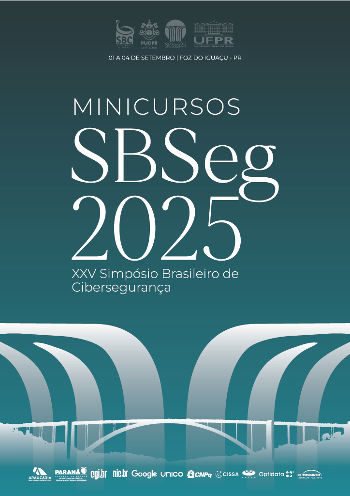

XXV SBSeg · 2025
Minicursos do XXV Simpósio Brasileiro de Cibersegurança
doi.org/10.5753/sbc.17851.3Palavras-chaveInfraestrutura como Código (IaC)Arquitetura de Confiança Zero (ZTA)Internet das Coisas (IoT)Computação Quântica e CriptografiaSensoriamento via WiFi e CSIRedes de Próxima Geração
Capítulos
Abrir ebook no SBC OpenLib ↗
- 1. Para além dos Perímetros da CiberSegurança com a Infraestrutura como Código (IaC)DOI · PDF ↗
- 2. Zero Trust Architecture para Dispositivos de Internet das Coisas e Redes de Próxima Geração: Ferramentas, Tendências e DesafiosDOI · PDF ↗
- 3. Introdução à Computação Quântica e Impactos em CriptografiaDOI · PDF ↗
- 4. Wi-Fi Sensing e CSI aplicados à Cibersegurança: Fundamentos, Aplicações e PráticaDOI · PDF ↗